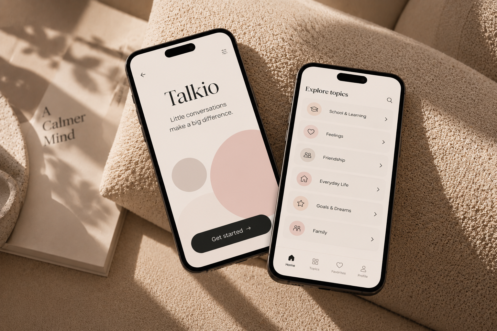

UX/UI DESIGN
Talkio
Creating an accessible digital experience for conversation cards.

ROLE
UX/UI Designer
TOOLS
Figma
Miro
CLIENT
AcadeMedia
OVERVIEW
Bringing conversation cards into a digital format.
Talkio is a digital conversation tool based on conversation cards.
The goal was to create a digital experience that was simple to use while keeping the purpose of the original cards.
MY ROLE
Research, structure and interface design.
I worked with interviews, user journeys, structure, user flows and prototypes.
I also worked with Figma components to help create a consistent interface.
RESEARCH
Understanding how the cards are used.
Research helped us understand how the conversation cards worked and how they could be translated into a digital experience.
Interviews and an A/B workshop helped us explore different ideas and directions.
ACCESSIBILITY
Making the experience easier to use.
Accessibility was considered throughout the project. Features included read-aloud support, symbols and favourites.
The experience was designed mobile-first to work well on smaller screens.
DESIGN
A simple and clear user journey.
The structure and user flows were designed to make it easy to find and use the conversation cards.
Components in Figma helped keep the interface consistent while prototypes helped us explore the experience.
NEXT PROJECT
Kontrollavgift.se →